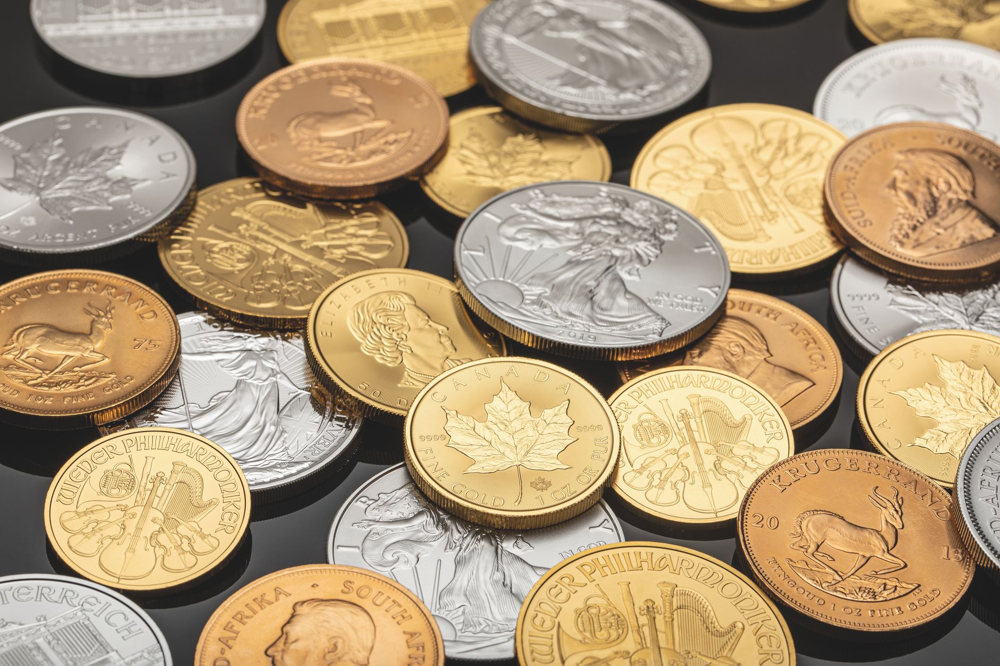

Are you looking to invest in silver but overwhelmed by the complexities of grading, authenticity, and premium pricing? You’re not alone. Many investors find the world of collectible coins confusing, especially for determining the true value of their silver. Fused Distribution understands this, and we’re here to cut through the noise. This guide will break down PCGS (Professional Coin Grading Service) and NGC (Numismatic Guaranty Corporation) certified silver coins, explaining how they impact value, where to find them, and how to make informed decisions. We stock a wide selection of certified silver coins, and we recommend starting your collection with a solid foundation. Reserve your first step at our reserve page.

What Are PCGS and NGC Certifications?
Third-party grading services like PCGS and NGC play a crucial role in the silver coin market. They independently assess coins for authenticity, grade their condition, and encapsulate them in tamper-evident holders. This process provides confidence to buyers and sellers alike. Essentially, they verify that the coin is genuine and accurately reflects its condition. Without certification, you’re relying solely on your own assessment, which can be risky, especially when dealing with older or less common coins. The certification grade significantly impacts the coin’s market value and the premium you pay. These services have become integral to the market, offering a standardized and trustworthy method of evaluating coins.
Why Choose PCGS or NGC Certified Silver Coins?
The decision to buy a PCGS or NGC-certified coin isn’t always straightforward. However, there are compelling reasons to prioritize these services. Primarily, they offer an unmatched level of assurance regarding authenticity. NGC has graded 15,603,470 American Silver Eagles to date, of which 5,234,192 (approximately 34%) received a perfect grade of MS70. This demonstrates the rigor of their grading process and the volume of coins they handle. PCGS-graded coins typically command 5-15% higher prices than identical NGC-graded coins in most U.S. Coin series, reflecting PCGS’s stronger brand equity in the domestic classic coin market. This premium reflects the trust and recognition associated with each grading service. While both are highly reputable, the perception of value can influence purchasing decisions.

How to Spot a Genuine PCGS or NGC Coin
While PCGS and NGC handle the grading process, it’s still beneficial to understand what to look for. A genuine PCGS or NGC coin will have a clear label on the holder indicating the grade and the grading service. The holder itself should be secure and tamper-evident, with a unique serial number. Carefully examine the holder’s surface for any signs of damage or alteration, such as scratches, dents, or evidence of tampering. While these services are highly reliable, it’s always wise to exercise caution and purchase from reputable dealers. A properly sealed holder is a key indicator of authenticity.
Understanding the PCGS and NGC Grading Scale
Both PCGS and NGC use a ten-point grading scale, ranging from 1 (Poor) to 70 (Perfect). This scale provides a standardized way to assess the condition of a coin. Here’s a breakdown:
- Poor (1-4): Heavily damaged, significant wear. These coins often have substantial surface loss and may be incomplete.
- Fair (5-6): Moderate wear, some surface imperfections. These coins show noticeable wear but may retain some luster.
- Good (7-8): Noticeable wear, some luster remaining. The details are beginning to wear, but some original luster can still be discerned.
- Very Good (9-10): Moderate wear, good luster. The coin shows considerable wear but retains a decent amount of original luster.
- Fine (11-12): Light wear, well-defined details. The details are still clear, though some minor wear is present.
- Very Fine (13-15): Slight wear, sharp details, excellent luster. The coin is in very good condition with minimal wear and strong luster.
- Extremely Fine (16-18): Very light wear, sharp details, excellent luster. Wear is barely perceptible, and the details remain sharp with exceptional luster.
- About Uncirculated (AU) (19-20): Minimal wear, almost uncirculated condition. These coins have been circulated very lightly and retain most of their original luster.
- Uncirculated (UNC) (21-23): Virtually uncirculated, minimal marks. These coins have never been circulated and show no signs of wear.
- Mint State (MS) (24-70): Perfect condition, no wear. MS70 represents a flawless coin, with no scratches, marks, or imperfections. The higher the grade, the more valuable the coin.
Comparing PCGS and NGC: Which is Better?
While both PCGS and NGC are respected grading services, there are subtle differences. PCGS generally has a slightly stronger reputation in the market for classic U.S. Coins, often commanding a premium. This is partially due to their longer history and established presence in the market for older coins. However, NGC is often favored for modern coins, particularly bullion coins like the American Silver Eagle, due to their expertise in grading these contemporary pieces. The price difference between the two is typically small, often less than 1%, but it’s worth considering when making your purchase. Ultimately, the choice often comes down to personal preference and the specific coin being evaluated.
The Premium of Certified Silver Coins: A Key Factor
Don’t be surprised to see certified silver coins priced significantly higher than raw, uncertified bullion. A 2026 American Silver Eagle graded MS70 retails for approximately $210, compared to roughly $82 for a standard uncertified bullion coin - a premium of approximately 156% over raw bullion. This premium reflects the added value of authentication, grading, and encapsulation. It also accounts for the increased demand for certified coins among collectors and investors who prioritize security and provenance. This premium is a significant factor for investors considering a long-term holding strategy. For more on this, see Magnet Test For Silver: Does It Work?.
Where to Buy PCGS and NGC Certified Silver Coins
Finding certified silver coins requires a strategic approach. Reputable dealers specializing in precious metals and coins are your best bet. Online marketplaces like APMEX and SD Bullion offer a wide selection of certified coins, but always verify the dealer’s reputation and authenticity through independent sources. Consider visiting local coin shops for a more personalized experience and the opportunity to examine the coins in person. When purchasing, carefully examine the holder and ensure it’s securely sealed. It's also prudent to request a certificate of authenticity from the grading service directly, especially for higher-value coins.
The Global Market for PCGS and NGC Certified Coins
The market for professionally graded assets is experiencing significant growth. The global coin collection market was valued at $11.87 billion in 2025 and is projected to reach $23.87 billion by 2032, a 10.5% CAGR driven in part by demand for professionally graded assets. This trend highlights the increasing value and desirability of certified coins, making them a sound investment for both collectors and investors. Factors contributing to this growth include increased accessibility to the market through online platforms and a growing awareness of the benefits of third-party authentication.
PCGS's Impact on the Coin Market
PCGS has certified over 60.5 million coins, banknotes, medals, and tokens with a combined declared value exceeding $58.3 billion. This impressive statistic underscores the scale of PCGS’s operations and its significant influence on the coin market. Their certification process sets a high standard for authenticity and condition, contributing to the overall stability and integrity of the industry. PCGS’s consistent grading standards have become a benchmark for the entire coin market.
Investing in PCGS and NGC Certified Silver Coins: A Strategic Approach
Investing in PCGS and NGC certified silver coins can be a smart move, but it’s crucial to do your research. Start with well-known bullion coins like the American Silver Eagle or the Canadian Maple Leaf, as these tend to hold their value well. Focus on acquiring coins in high grades (MS70 or higher) to maximize your potential returns. Consider diversifying your portfolio to include a range of coin series and grades, mitigating risk. Remember, like any investment, there’s always a degree of risk, and thorough research is essential. Consulting with a financial advisor is recommended before making any significant investment decisions.
Your Next Step: Reserve Your Silver Today
Ready to take the next step in your silver investment journey? Fused Distribution offers a straightforward and transparent path to acquiring certified silver coins. We stock a diverse selection of high-quality coins and provide expert advice to help you make informed decisions. Stop guessing about premiums and start investing with confidence. Reserve your first step at our reserve page.
Related
- How To Verify Silver Purity At Home
- Magnet Test For Silver: Does It Work?
- Silver Counterfeit Detection Guide
Read next: How To Verify Silver Purity At Home